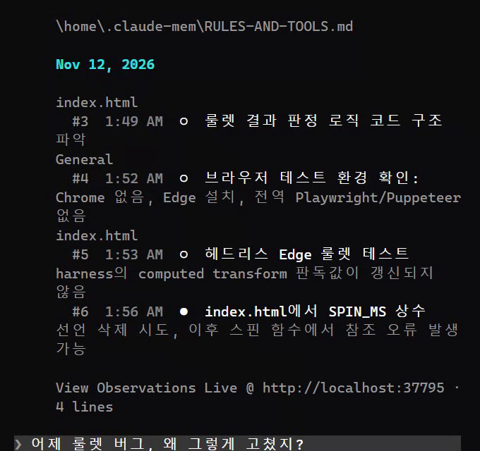
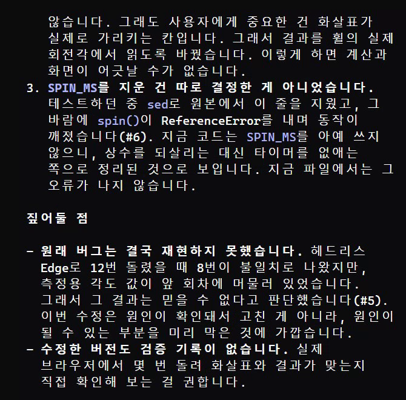
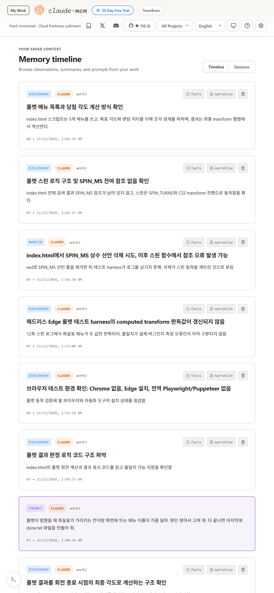

클로드 코드가 일하는 동안 읽고·고치고·돌린 것을 두 번째 클로드가 짧은 기록으로 남기고, 다음 새 창은 그 기록의 목차부터 깔고 시작해요. 그래서 새 창에서 '어제 그 버그 왜 그렇게 고쳤지?'라고 물으면 기록을 찾아 이유까지 답해요. 아래 화면은 빈 설정으로 새로 깐 클로드 코드에서 실제로 돌린 거예요. 오픈소스(Apache-2.0)예요.
클로드 코드 입력창에 아래 '복사해서 쓰기'의 설치 1·2를 차례로 넣어요. 그다음 클로드 코드를 껐다 켜요. 터미널에서 npx claude-mem install로 깔아도 돼요(설치 중 로그인·공식 관찰자 체험을 물으면 건너뛰어도 돼요).
내 PC의 ~/.claude-mem/settings.json에 "CLAUDE_MEM_MODE": "code--ko"를 넣고 클로드 코드를 다시 켜요. 기록 제목·내용이 한국어로 남아요. 파일이 없으면 처음 실행 때 생겨요.
따로 '기억해 줘'라고 할 필요가 없어요. 클로드가 파일을 읽고, 고치고, 명령을 돌릴 때마다 옆에서 두 번째 클로드가 한 줄 기록으로 정리해요. 기록은 내 PC ~/.claude-mem에 쌓여요.
같은 프로젝트 폴더에서 새 창을 열면, 시작하자마자 지난 기록 목차가 깔려요(기억은 그 프로젝트의 두 번째 세션부터 들어가요). 자세한 내용은 필요할 때만 꺼내 와요.

'어제 ○○ 왜 그렇게 고쳤지?', '지난주에 로그인 쪽 뭐 바꿨지?'처럼 물어요. 클로드가 기록 검색(mem-search)으로 목차 → 시간순 → 자세히 순서로 찾아 답해요. 기록에 없는 건 없다고 말해요.

클로드 코드를 켤 때 나오는 주소(View Observations Live @ http://localhost:…)를 브라우저로 열면 기록이 시간순으로 보여요. 필요 없는 기록은 지울 수 있어요.

클로드 코드 입력창
/plugin marketplace add thedotmack/claude-mem
클로드 코드 입력창 — 그다음 클로드 코드를 껐다 켜기
/plugin install claude-mem
~/.claude-mem/settings.json 안
{ "CLAUDE_MEM_MODE": "code--ko" }같은 프로젝트에서 새 창
어제 이 프로젝트에서 고친 버그랑, 왜 그렇게 고쳤는지 기록 찾아서 알려 줘.
대화에 붙여 넣을 비밀번호·키를 감싸기
<private>여기에 비밀번호나 키</private>
도움이 되셨다면
@ai.antenna.kr
에서 바로 쓰는 AI 활용법을 계속 올립니다.